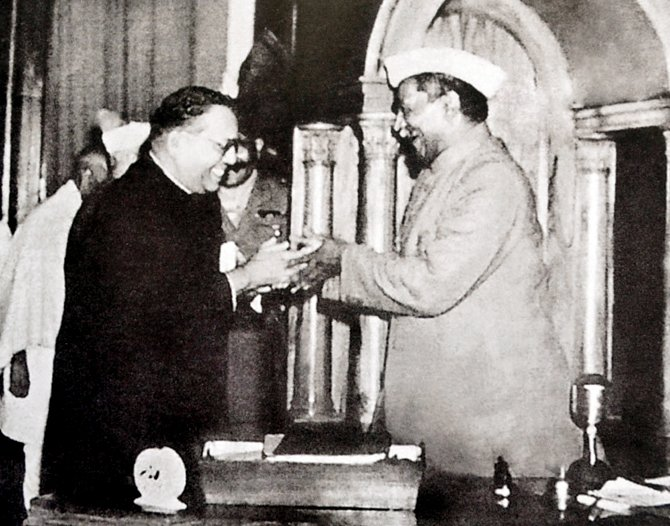
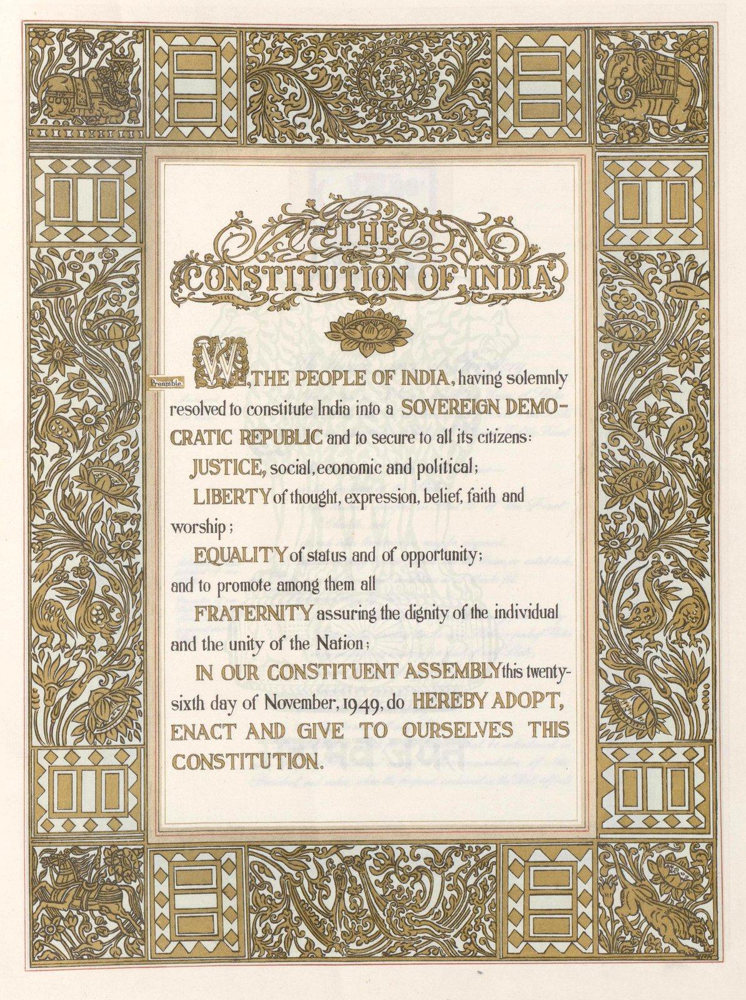

Constitutional Framework, The Preamble & Sources
An exhaustive, high-yield guide to the genesis of the Indian Constitution: Cabinet Mission Plan, Constituent Assembly committees, Dr. B.R. Ambedkar's Drafting Committee, verbatim Preamble architecture, the 10+ borrowed global sources, and the 12 Schedules for UPSC, APSC & State PSC exams.
1. Making of the Constitution & The Constituent Assembly
From the demand for a Constitution in 1934 (M.N. Roy) to enactment on January 26, 1950

Presentation of the Final Draft Constitution (November 25, 1949)
The Constituent Assembly held 11 sessions over 2 years, 11 months, and 18 days, spending ₹64 lakhs to produce the world's lengthiest written constitution.
Genesis & Cabinet Mission
Idea first proposed by M.N. Roy (1934); officially demanded by INC in 1935. Accepted in principle by British in August Offer (1940). Constituted in Nov 1946 under Cabinet Mission Plan (Pethick-Lawrence, Stafford Cripps, A.V. Alexander). Total 389 seats (296 British India + 93 Princely States).
Key Dates & Officers
• Dec 9, 1946: 1st meeting. Dr. Sachchidananda Sinha elected temporary President.
• Dec 11, 1946: Dr. Rajendra Prasad elected permanent President; H.C. Mukherjee and V.T. Krishnamachari as Vice-Presidents.
• Sir B.N. Rau: Appointed Constitutional Advisor.
Objective Resolution
Moved by Pandit Jawaharlal Nehru on Dec 13, 1946. Outlined fundamentals of an Independent Sovereign Republic, guaranteeing justice, equality, freedom, and safeguards for minorities. Unanimously adopted on Jan 22, 1947; modified form became the Preamble.
Calligraphy & Design
Calligraphed entirely by hand by Prem Behari Narain Raizada in flowing English italic script using No. 303 nibs. Illuminated, decorated, and bordered by artists of Shantiniketan, spearheaded by Nandalal Bose and Beohar Rammanohar Sinha (who signed the Preamble page).
Major Committees of the Constituent Assembly & Their Chairmen
Direct questions asked in UPSC / APSC| Committee Name | Chairman | Mandate / Crucial Details |
|---|---|---|
| Drafting Committee (Set up Aug 29, 1947) | Dr. B.R. Ambedkar | 7 Members: Dr. B.R. Ambedkar (Chairman), N. Gopalaswami Ayyangar, Alladi Krishnaswamy Iyer, Dr. K.M. Munshi, Syed Mohammad Saadulla, N. Madhava Rau (replaced B.L. Mitter), T.T. Krishnamachari (replaced D.P. Khaitan). Prepared original draft. |
| Union Powers Committee | Jawaharlal Nehru | Delineated powers belonging exclusively to the Central Union Government |
| Union Constitution Committee | Jawaharlal Nehru | Drafted the structure and executive authority of the Union Government |
| Provincial Constitution Committee | Sardar Vallabhbhai Patel | Structured provincial executive, governor's role, and state legislatures |
| Advisory Committee on Fundamental Rights, Minorities & Tribal Areas | Sardar Vallabhbhai Patel | Sub-committees: Fundamental Rights (J.B. Kripalani), Minorities (H.C. Mukherjee), North-East Frontier Tribal Areas & Assam (Gopinath Bardoloi). |
| Rules of Procedure Committee & Steering Committee | Dr. Rajendra Prasad | Supervised the procedural conduct, agenda, and deliberations of the Assembly |
| States Committee (Committee for Negotiating with States) | Jawaharlal Nehru | Negotiated with princely state representatives regarding accession and representation |
| Order of Business Committee | Dr. K.M. Munshi | Prioritized legislative and constitutional drafts for debate |
| Ad-hoc Committee on the National Flag | Dr. Rajendra Prasad | Adopted the National Flag designed by Pingali Venkayya on July 22, 1947 |
2. The Preamble: Verbatim Text, Architecture & Landmark Cases
"The identity card of the Constitution" (N.A. Palkhivala) and its solemn philosophical foundations

Original Calligraphic Page of the Preamble (1949)
Decorated by Beohar Rammanohar Sinha and calligraphed by Prem Behari Narain Raizada. Signed on 26 November 1949.
THE CONSTITUTION OF INDIA
WE, THE PEOPLE OF INDIA, having solemnly resolved to constitute India into a
SOVEREIGN SOCIALIST SECULAR DEMOCRATIC REPUBLIC
and to secure to all its citizens:
social, economic and political;
of thought, expression, belief, faith and worship;
of status and of opportunity; and to promote among them all
assuring the dignity of the individual and the unity and integrity of the Nation;
IN OUR CONSTITUENT ASSEMBLY this twenty-sixth day of November, 1949, do HEREBY ADOPT, ENACT AND GIVE TO OURSELVES THIS CONSTITUTION.
Berubari Union Case (1960)
The Supreme Court held that the Preamble is a "key to open the minds of the makers," but is NOT a part of the Constitution. Hence, it could not be amended under Article 368 nor used as an independent source of substantive power.
Kesavananda Bharati Case (1973)
A 13-judge constitutional bench overturned Berubari and ruled that the Preamble IS an integral part of the Constitution. It can be amended under Article 368, provided such amendments do not alter or destroy its Basic Structure.
42nd Amendment Act 1976
Enacted during Emergency under Indira Gandhi. Added three words to the Preamble: 'SOCIALIST', 'SECULAR', and replaced 'unity of the Nation' with 'unity and INTEGRITY of the Nation'. Preamble has been amended only once till date.
3. Sources of the Indian Constitution: A Global Synthesis
Dr. Ambedkar stated the Constitution was crafted after "ransacking all known constitutions of the world"
| Source Country / Statute | Constitutional Provisions Borrowed & Adapted | Key Articles / Prelims Significance |
|---|---|---|
| Government of India Act 1935 (~60% of Constitution) | Federal Scheme, Office of Governor, Judiciary, Public Service Commissions (UPSC/SPSC), Emergency Provisions, and elaborate administrative details. | Forms structural backbone of the Constitution |
| United Kingdom (British Constitution) | Parliamentary government, Rule of Law (Art 14), Legislative procedure, Single Citizenship, Cabinet system, Prerogative Writs, Parliamentary privileges, Bicameralism. | Articles 74, 75, 105, 107–122 |
| United States of America (US Constitution) | Fundamental Rights (Bill of Rights), Independence of Judiciary, Judicial Review (Art 13), Impeachment of President (Art 61), Removal of Supreme Court & High Court judges, Post of Vice-President, Preamble concept. | Articles 12–35, 61, 63, 124, 137 |
| Ireland (Irish Constitution) | Directive Principles of State Policy (DPSP), Nomination of 12 members to Rajya Sabha by President (Art 80), Method of Election of the President (Art 55). | Articles 36–51, 55, 80 |
| Canada (Canadian Constitution) | Federation with a strong Centre, Vesting of residuary powers in the Centre (Art 248), Appointment of State Governors by Centre, Advisory Jurisdiction of Supreme Court (Art 143). | Articles 143, 155, 248 |
| Australia (Australian Constitution) | Concurrent List (7th Schedule), Freedom of Trade, Commerce and Intercourse (Art 301), Joint Sitting of the two Houses of Parliament (Art 108). | Articles 108, 301, 7th Schedule |
| Germany (Weimar Constitution) | Suspension of Fundamental Rights during National Emergency (Articles 358 and 359). | Articles 352, 358, 359 |
| USSR (Soviet Constitution) | Fundamental Duties (Article 51A - added by 42nd Amendment 1976), Ideals of Justice (Social, Economic and Political) in the Preamble. | Article 51A, Preamble |
| France (French Constitution) | Republic concept, Ideals of Liberty, Equality, and Fraternity in the Preamble (derived from French Revolution 1789). | Preamble |
| South Africa | Procedure for Amendment of the Constitution (Article 368), Election of members of the Rajya Sabha by proportional representation. | Article 368 |
| Japan | Procedure Established by Law (Article 21), differing from the American 'Due Process of Law'. | Article 21 |
4. The Twelve Schedules of the Indian Constitution
Originally 8 Schedules in 1950; 4 added by amendments (1st, 52nd, 73rd, 74th Amendments)
| Schedule | Subject Matter & Core Provisions | Articles Concerned | Amendment Origin / Key Notes |
|---|---|---|---|
| First Schedule | Names of the States and their territorial jurisdiction; Names of Union Territories and their extent (Currently 28 States & 8 UTs). | Articles 1 and 4 | Original (1950) |
| Second Schedule | Salaries, allowances, and emoluments of the President, Governors, Speaker/Deputy Speaker of LS & RS, SC/HC Judges, and Comptroller & Auditor General of India (CAG). | Articles 59, 65, 75, 97, 125, 148, 158, 164, 186, 221 | Charged on Consolidated Fund of India |
| Third Schedule | Forms of Oaths or Affirmations for Union/State ministers, MPs/MLAs, SC/HC Judges, and CAG. (Note: President's oath is in Art 60, Governor in Art 159, VP in Art 69, NOT in 3rd Schedule!) | Articles 75, 84, 99, 124, 146, 173, 188, 219 | Frequent prelims trap question |
| Fourth Schedule | Allocation of seats in the Rajya Sabha (Council of States) to States and Union Territories based on population. (UP has highest with 31 seats). | Articles 4 and 80 | Allocated proportionally |
| Fifth Schedule | Provisions relating to the administration and control of Scheduled Areas and Scheduled Tribes in 10 states (Tribes Advisory Councils). | Article 244(1) | Governor has special executive powers |
| Sixth Schedule | Administration of Tribal Areas in the 4 Northeastern States: Assam, Meghalaya, Tripura, Mizoram (AMTM) through Autonomous District Councils (ADCs). | Articles 244(2) and 275(1) | ADCs have legislative, judicial & taxing powers |
| Seventh Schedule |
Division of powers between Union & States into 3 Lists: • Union List: 100 items (originally 97: Defence, Atomic energy, Foreign affairs, Railways, Banking). • State List: 61 items (originally 66: Police, Public health, Agriculture, Local government). • Concurrent List: 52 items (originally 47: Education, Forests, Weights/measures, IPC/CrPC - 5 transferred from State by 42nd Amend 1976). |
Article 246 | Residuary powers with Centre (Art 248) |
| Eighth Schedule |
22 Officially Recognized Languages of India (originally 14). • 21st Amend (1967) added: Sindhi. • 71st Amend (1992) added: Konkani, Manipuri, Nepali (KMN). • 92nd Amend (2003) added: Bodo, Dogri, Maithili, Santhali (BDMS). Note: English and Rajasthani are NOT in the 8th Schedule! |
Articles 344(1) and 351 | Classical Languages: 6 (Tamil, Sanskrit, Telugu, Kannada, Malayalam, Odia) + 5 added in 2024 |
| Ninth Schedule | Validation of certain Acts and Regulations (originally land reforms to prevent challenge under Fundamental Rights). In I.R. Coelho Case (2007), SC ruled laws added after April 24, 1973 are open to judicial review for violating Basic Structure. | Article 31B | Added by 1st Amendment Act, 1951 |
| Tenth Schedule | Disqualification of members on ground of defection (Anti-Defection Law). Decision on disqualification made by Speaker/Chairman (subject to judicial review per Kihoto Hollohan 1992). 91st Amend 2003 deleted split provision (now requires 2/3rd merger). | Articles 102(2) and 191(2) | Added by 52nd Amendment Act, 1985 |
| Eleventh Schedule | Specifies the powers, authority, and responsibilities of Panchayati Raj Institutions (PRIs). Contains 29 functional matters (Agriculture, land improvement, minor irrigation, animal husbandry, cottage industries, etc.). | Article 243G | Added by 73rd Amendment Act, 1992 |
| Twelfth Schedule | Specifies the powers, authority, and responsibilities of Municipalities / Urban Local Bodies (ULBs). Contains 18 functional matters (Urban planning, water supply, public health, roads, fire services, solid waste management). | Article 243W | Added by 74th Amendment Act, 1992 |
Active Recall Flashcards (3D Flip)
Click any card to flip between Question and Prelims Answer
Prelims Self-Assessment Quiz
Test your command over Constitutional evolution, Preamble cases, borrowed sources, and Schedules